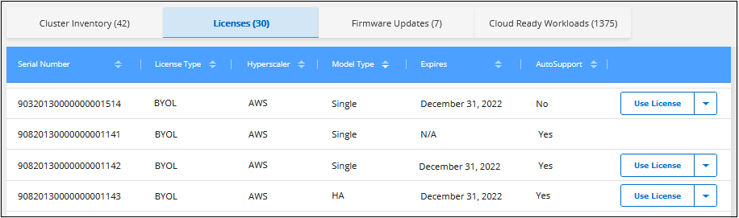
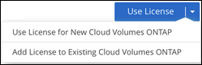
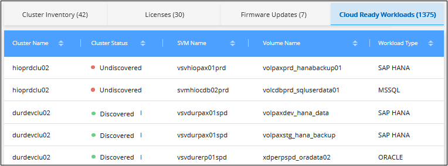

请求文档变更
请求文档变更 在 GitHub 上编辑
在 GitHub 上编辑 提供者指南
提供者指南使用 Active IQ 数据管理 ONTAP 集群
Cloud Manager 中的 " 发现 " 页面可显示内部环境中任何未发现的 ONTAP 集群，任何集群是否需要更新磁盘或磁盘架固件，以及您是否正在使用购买内部系统时授予的所有 Cloud Volumes ONTAP 许可证。此信息从提供给 Cloud Manager "Active IQ 数字顾问"。
查看未使用的基于 Cloud Volumes ONTAP 节点的许可证
您购买的许多内部 ONTAP 存储系统软件包都附带了基于 Cloud Volumes ONTAP 节点的免费许可证，因此您可以在 Cloud Manager 中试用 NetApp 云存储产品。您可以使用此许可证创建新的 Cloud Volumes ONTAP 实例，也可以将此许可证应用于现有 Cloud Volumes ONTAP 实例以将容量扩展 368 TiB 。
您可以根据 NetApp 支持站点凭据查看是否有任何未使用的 Cloud Volumes ONTAP 许可证。

|
基于节点的许可证的有效期从下个月的第一天开始。例如，如果您在 2021 年 12 月 15 日获得基于节点的 BYOL 许可证，则许可证期限从 2022 年 1 月 1 日（下个月的第一天）开始。 |
-
在 Cloud Manager 中，单击 * 发现 * 选项卡。
-
单击页面下部的 * 许可证 * 选项卡。

对于每个未使用的许可证，将显示一个 * 使用许可证 * 按钮。
-
如果要激活并开始使用此许可证，请单击 * 使用许可证 * 。

请参见以下任务，了解使用可用许可证的选项。
使用未使用的 Cloud Volumes ONTAP 许可证
您可以使用未使用的许可证创建新的 Cloud Volumes ONTAP 实例或扩展现有 Cloud Volumes ONTAP 实例上的许可证容量。许可证容量为 368 TiB 。
"_expisates" 列指示许可证处于活动状态的最后一天。创建新的 Cloud Volumes ONTAP 系统时，此日期为许可证到期日期。更新现有 Cloud Volumes ONTAP 系统时，此选项表示现有许可证的延长时间长度。
License Type ， Hypercaler 和 Model Type 列说明了其 Cloud Volumes ONTAP 许可证的类型。例如， * 自带许可证（ BYOL ） | 单个许可证（ Azure ） * 表示此许可证是部署在 Microsoft Azure 中的 " 单节点 " Cloud Volumes ONTAP 系统的 " 自带许可证 " 。表中显示了此列中可能显示的值。
| 列 | 值 |
|---|---|
许可证类型 |
PAYGO BYOL |
超大规模云提供商 |
Azure AWS GCP 所有提供商 |
型号类型 |
单个 HA |
创建 new Cloud Volumes ONTAP 系统时，这是要部署的系统类型。例如，使用示例许可证（ * BYOL | Single | Azure* ），您可以在 Azure 中创建一个单节点 Cloud Volumes ONTAP 系统，其授权高达 368 TiB 。此许可证不能用于创建 HA 系统或在 AWS 中部署实例。
更新 existent Cloud Volumes ONTAP 系统时，这表示可以扩展其现有许可证容量的系统类型。再次使用示例许可证，您可以延长 Azure 中任何单节点 Cloud Volumes ONTAP 系统的许可证。此许可证不能用于扩展 HA 系统或 AWS 中部署的实例的许可证。
使用未使用的许可证创建新的 Cloud Volumes ONTAP 系统
按照以下步骤使用未使用的许可证创建新的 Cloud Volumes ONTAP 实例。
-
单击 * 使用许可证 * 并选择 * 对新 Cloud Volumes ONTAP 使用许可证 * 。
-
在 "Use License…" 页面中，验证许可证信息，然后单击 * 使用许可证 * 。
在大多数情况下，系统会将您定向到 * 详细信息和凭据 * 页面，以便为 Cloud Volumes ONTAP 系统创建工作环境，因为云提供程序和节点数均由许可证定义。
如果您正在使用定义为 " 所有提供程序 " 的许可证，则系统会将您定向到 * 选择位置 * 页面，以便您可以先选择云提供程序，然后再完成 * 详细信息和凭据 * 页面。
-
按照以下步骤创建工作环境和第一个卷。
根据要部署 Cloud Volumes ONTAP 系统的云提供商，请参见以下各节。
扩展现有 Cloud Volumes ONTAP 系统的许可证容量
如果您当前部署的 Cloud Volumes ONTAP 系统符合其中一个免费许可证的许可证要求（即相同的云提供商，节点数等），则可以按照以下步骤将许可证容量扩展 368 TiB 。
-
单击 * 使用许可证 * 并选择 * 向现有 Cloud Volumes ONTAP 添加许可证 * 。

-
在 " 添加许可证 …" 页面中，选择要扩展许可证的 Cloud Volumes ONTAP 系统，然后单击 * 添加许可证 * 。
此时将显示确认对话框。

-
您可以单击 * 关闭 * 以关闭此窗口并返回到 " 发现 " 页面，也可以单击此链接以转到 Cloud Volumes ONTAP 许可页面以查看有关该系统许可的更多详细信息。
正在下载新的磁盘和磁盘架固件
您可以查看发现的任何 ONTAP 集群是否需要更新其磁盘架或磁盘固件。您可以下载 Ansible 攻略手册来升级固件。
-
注： * 只有在订阅了某些支持计划后，才能查看和下载新固件。
-
在发现页面中，单击 * 固件更新 * 选项卡。

如果任何集群需要新固件，则会显示 * 全部下载 * 按钮。
-
单击 * 全部下载 * 并保存 zip 文件。
-
解压缩此 zip 文件，并按照以下说明进行操作 "更新存储系统固件"。
固件已更新。ONTAP 系统下次向 Active IQ 发送 AutoSupport 消息时， Firmware Updates 页面中的状态将更新，以显示不再需要更新。
查看适用于云的内部工作负载
某些工作负载或卷最适合从内部 ONTAP 集群迁移到 Cloud Volumes ONTAP 系统。其中一些优势包括降低成本，提高性能和故障恢复能力。"_Cloud Ready Workloads _ " 选项卡列出了已发现的 ONTAP 集群中的这些工作负载。

此页面上显示的受支持工作负载包括： SAP ， SAP HANA ， Oracle ，文件共享和 SharePoint 。
lift and shifT 是一种将应用程序迁移到云的方法。这意味着无需重新设计应用程序，即可将应用程序及其关联数据迁移到云平台。请参见有关的详细信息 "提升和移动"。